2026-08-05 · ow-valley · boom 40 UNTOUCHED (user ruling) · five road stations at the SHIPPED rig
Instruments: tools/ow_probe/camfit.js (frame census · analytic horizon · ground coverage),
tools/ow_probe/cam_sweep.mjs, tools/ow_probe/cam_table.mjs. Plates are the shipped
pipeline, post-fx ON. Two blind critics, fresh per round, packs in ../ow-refs/blind-r27/
and ../ow-refs/blind-r27-refused/.
Forty-nine candidate rigs measured on five stations, two blind rounds. The first recommendation was REFUSED by the blind critic; the second was ranked above the shipped frame by a different one. The verdict is OWPITCH 0.61 → 0.66, OWTILT unchanged at 0.22.
Round 14's critic measured our frames at ~2–5% sky against the references' 15–25%,
and that number is what put Bet 5 on the slate. It was taken before 35953fc shipped
ORBIT.tilt. Measured now on the shipped rig, sky dome and the four ridge rings counted
separately:
| station | sky % | ridge % | air (sky+ridge) % | ground % | veg % | visible ground m² |
|---|---|---|---|---|---|---|
| gate (station 12) | 5.0 | 26.9 | 31.9 | 41.3 | 19.5 | 2258 |
| vista (station 30) | 3.7 | 14.7 | 18.4 | 48.8 | 21.7 | 2845 |
| gorge (station 150) | 0.8 | 11.3 | 12.1 | 56.8 | 24.0 | 455 |
| bend (station 120) | 0.8 | 5.7 | 6.5 | 51.5 | 40.8 | 615 |
| wood (station 90) | 1.6 | 1.6 | 3.2 | 31.2 | 65.0 | 260 |
The horizon LINE is still off the top of the frame — horizonMissDeg 1.35, one and a
third degrees short at the shipped aim — but the ridge rings are tall enough to fill the top of the
frame anyway. The air band is real and already at reference scale on the open stations.
"Add more sky" is not the deficit any more. Both blind critics this round went further and called that
band a liability:
"a solid navy-gray stack of untextured hill silhouettes… ~34% of the frame, and it carries zero information: no landmark, no destination, no scale cue, no atmospheric event. It is flat-shaded banding. The horizon is in shot and buys nothing."
land_cams.json has carried this sentence since it was written — "at boom 40 the shipped
follow camera is INSIDE the canopy for road stations ~78-172, six of nine sampled stations photograph
nothing but leaves" — and nothing ever acted on it. Measured at station 90:
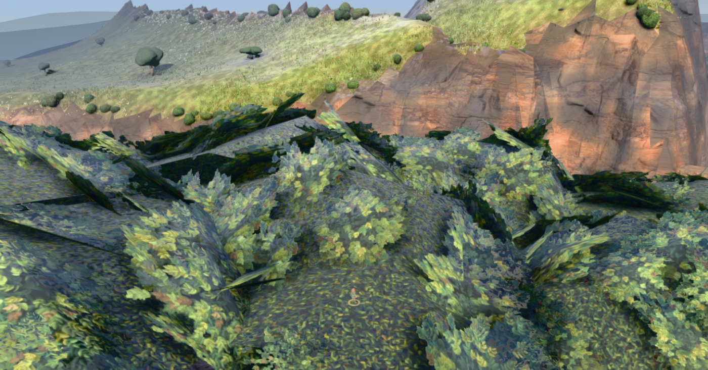
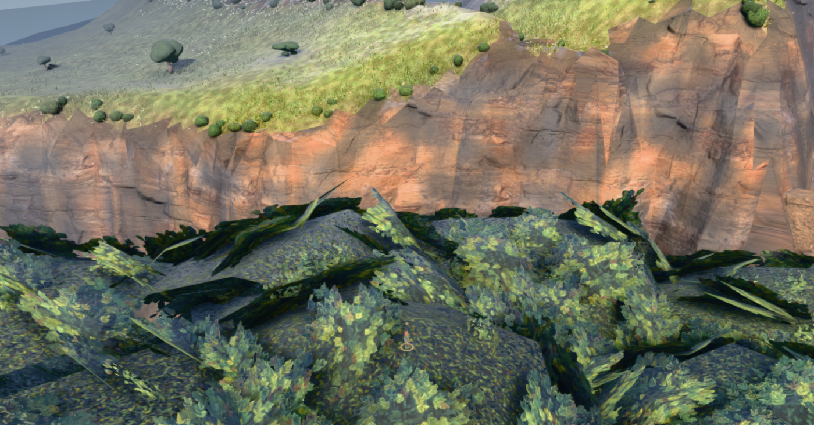
THIS IS NOT A CAMERA DEFECT AND THE CAMERA CANNOT FIX IT. It is where the road was put. On the user's own constraint — a wide view of the space around the player — the shipped camera fails hardest exactly where the player spends most of the walk, and no rig in a 49-candidate sweep recovers it. Naming that is the most valuable thing this pass produced, and it is a world item, not a camera one.
Three knobs: pitch (boom elevation), tilt (aim, applied after the look-at),
panY (boom lift). The sweep produced two structural results worth stating as identities
rather than as tables.
WHERE THE BODY SITS IN THE FRAME IS A FUNCTION OF tilt ALONE.
Measured: playerFrameY = 0.577 / 0.656 / 0.736 / 0.818 for tilt 0.04 / 0.10 / 0.16 / 0.22 —
the same four numbers at pitch 0.61 and at pitch 0.37, to three decimals. The boom's elevation cancels:
the camera→player angle is pitch + (1/40)·cos pitch and the axis is pitch − tilt,
so the difference is tilt plus a 1.4° constant. Pitch does not move the body. Only tilt does.
AND AT BOOM 40 WITH A 42° FOV, FIXING THE BODY POSITION AND THE AIR BAND FIXES THE ENTIRE RIG. Three knobs, three constraints — distance, body position, axis angle — one solution. The shipped 0.61 / 0.22 / 0 is the unique rig with today's framing at today's distance. Every candidate below buys one of the three by spending another; there is no free move, and the 2026-08-04 hope that pitch alone was the lever was geometrically unavailable.
The boom lift is a zoom in disguise. ORBIT.dist is
the radius from the AIM POINT, not from the player, so panY +10 moves the camera 10 m up and
the true camera→player distance from 40.6 m to 47.2 m — the character drops from 31 px to
23 px. Lift candidates measured well on every other axis and were refused for exactly this: distance is
the one thing the user fixed.
Five stations per row, boom 40, panY 0. PLYR = the body's feet (0 = top edge, 1 = bottom);
AIR = sky + ridge; vegMax = the worst station's leaf fill; areaM2 = terrain both in frustum and
unoccluded, contiguous from the player — the user's hard constraint; clr = the smallest
measured air gap under the boom (this rig has no camera collision).
| pitch / tilt | PLYR | AIR % | ground % | veg % | vegMax % | areaM2 | ahead m | clr m | char px |
|---|---|---|---|---|---|---|---|---|---|
| 0.61 / 0.22 shipped | 0.818 | 14.4 | 45.9 | 34.2 | 65.0 | 1287 | 20.8 | 7.7 | 31 |
| 0.66 / 0.22 pick | 0.817 | 11.7 | 54.6 | 26.8 | 49.0 | 1289 | 20.8 | 8.6 | 30 |
| 0.64 / 0.24 | 0.845 | 14.6 | 51.7 | 27.3 | 53.0 | 1269 | 20.8 | 8.3 | 31 |
| 0.66 / 0.25 refused | 0.858 | 14.4 | 54.5 | 24.5 | 45.4 | 1260 | 20.8 | 8.6 | 30 |
| 0.68 / 0.26 | 0.872 | 14.2 | 57.1 | 21.9 | 37.6 | 1243 | 20.8 | 8.9 | 30 |
| 0.70 / 0.22 | 0.816 | 9.6 | 60.7 | 23.3 | 36.2 | 1284 | 20.8 | 9.2 | 29 |
| 0.70 / 0.28 | 0.900 | 15.0 | 59.9 | 19.0 | 29.1 | 1216 | 20.8 | 9.2 | 30 |
| 0.79 / 0.28 | 0.898 | 10.1 | 70.0 | 13.3 | 19.0 | 1206 | 20.8 | 10.5 | 27 |
| 0.70 / 0.16 option, §7 | 0.734 | 5.4 | 59.7 | 27.7 | 43.8 | 1337 | 20.8 | 9.2 | 28 |
| 0.43 / 0.22 (pitch DOWN) | 0.821 | 17.1 | 29.2 | 46.5 | 73.4 | 579 | 7.5 | 1.8 | — |
| 0.37 / 0.22 (pitch DOWN) | 0.821 | 16.1 | 35.2 | 37.2 | 88.5 | 588 | 7.5 | −0.5 | — |
The two bottom rows reproduce the 2026-08-04 finding on an instrument that can say why: below
pitch ~0.46 the boom goes into the hillside (clr negative at 0.37) and the visible ground
collapses by more than half — at the vista station areaM2 goes to literally zero,
because the frustum no longer contains the player's own ground. Lowering the pitch violates the user's one
hard constraint, on measurement rather than on deference.
The first recommendation off the numbers was 0.66 / 0.25: air-neutral, ground +19%, vegetation −28%, worst-station leaf fill 65% → 45%, visible ground −2.1%. Every metric moved the right way. A blind critic that had never seen the numbers ranked it below the frame it replaced, on both composition and art quality, and named it the single worst composition in the pack:
"putting the playable character in the bottom 15% of the frame, occluded by its own interaction prompt and cropped by the frame edge… That is not a stylistic choice, it is a broken shot."
The cost the metrics could not see was the 0.04 of frame height the body gave up (0.818 → 0.858) and what it did to the world-anchored UI. A steeper camera compresses the vertical screen separation between things at different depths, so at the gate station the portal marker, the "Emberbrook" pill and the "Enter Emberbrook? [E]" prompt stack cleanly at 0.61/0.22 and overlap each other at 0.66/0.25. Nothing goes off screen, nothing measured moved, and every gate in this repo is blind to it.
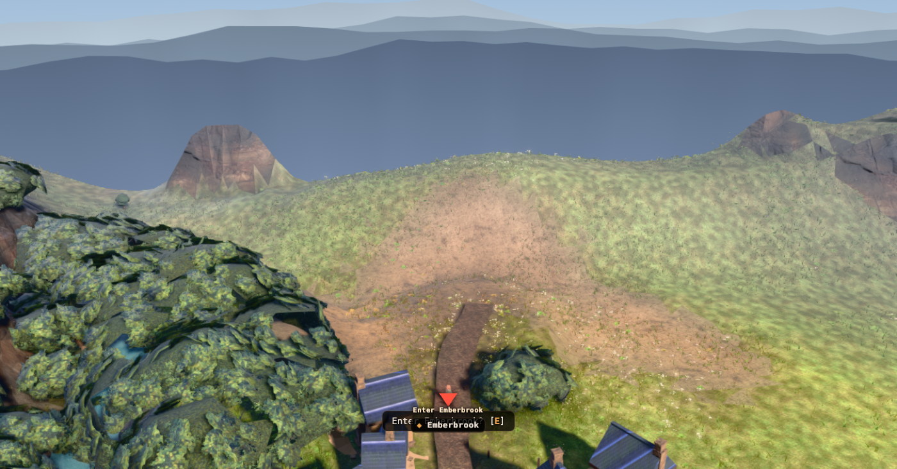
../ow-refs/blind-r27-refused/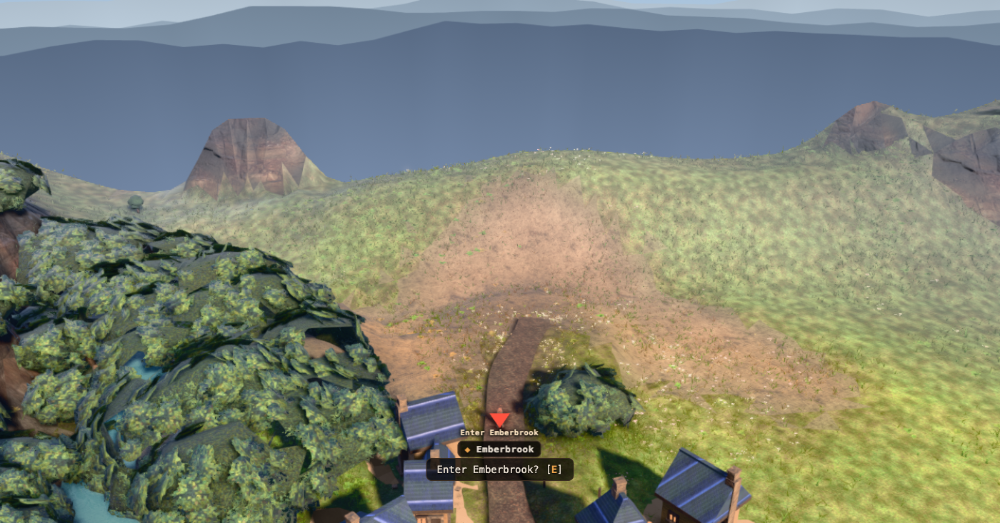
Round 4–5's rule held again, on this lane's own work: a number that improves while the
picture worsens is the wrong number. The fix was to stop spending the body's frame position — keep
OWTILT where it is and move only the boom.
Five-station means, shipped → r27:
| shipped | r27 | Δ | |
|---|---|---|---|
| body position in frame | 0.818 | 0.817 | unchanged — the whole point |
| ground in frame | 45.9% | 54.6% | +19% |
| vegetation in frame | 34.2% | 26.8% | −22% |
| vegetation, WORST station | 65.0% | 49.0% | −25% |
| visible ground area (the constraint) | 1287 m² | 1289 m² | +0.2% — the constraint holds |
| ground radius ahead of the player | 20.8 m | 20.8 m | unchanged |
| boom clearance, worst station | 7.7 m | 8.6 m | +12% |
| character height on screen | 31 px | 30 px | true distance 40.6 → 40.7 m |
| air (sky + ridge) | 14.4% | 11.7% | the cost — 2.7 points of the distance band |
| sky specifically, gate station | 5.0% | 0.2% | the sliver of true sky leaves the frame |
The second blind critic, fresh, ranked the r27 frame above the shipped frame on both composition and art quality, identified the pair unprompted, and described the trade in its own words:
"the dead upper band drops from ~34% to ~27%; the road, the bridge and the village roofs all read at usable size; the thing the prompt is asking about is finally legible… What it cost: the character did not move — 0.79 in both."
Its measurement of the body agrees with the instrument's (0.818 / 0.817). Its account of the MECHANISM does not — it read the change as a push-in or an FOV narrowing. It is neither: the boom climbs 2.9° and nothing else moves, which grows near objects and shrinks the far band in exactly the way a push-in would. Recorded because a blind critic's observations are the deliverable and its diagnosis is not.
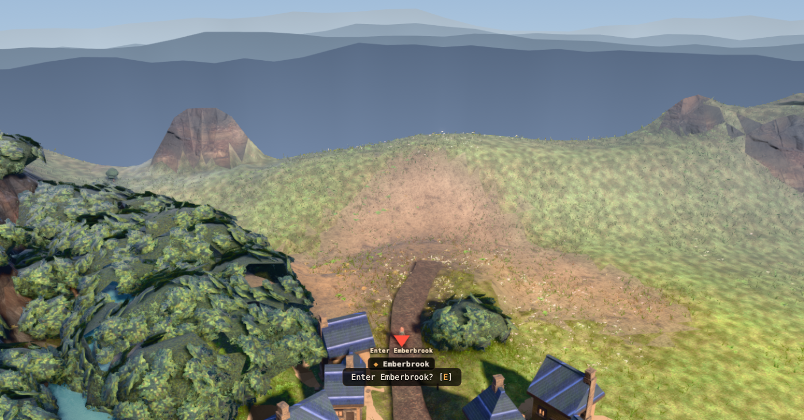
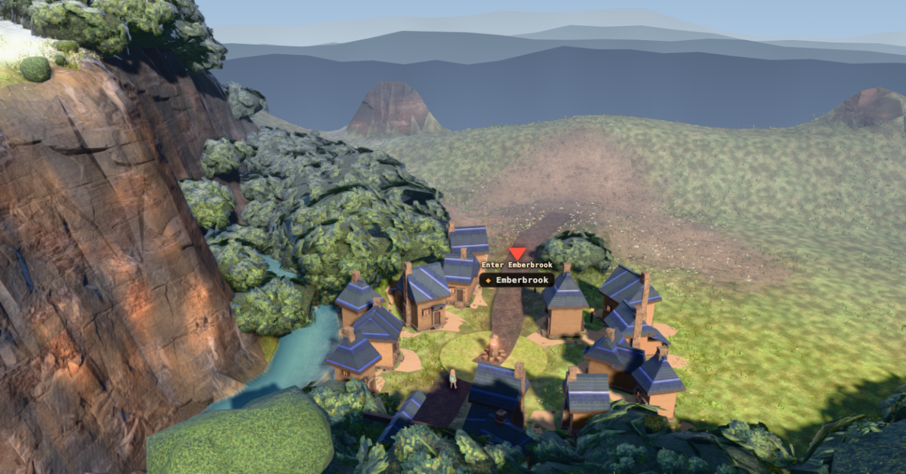
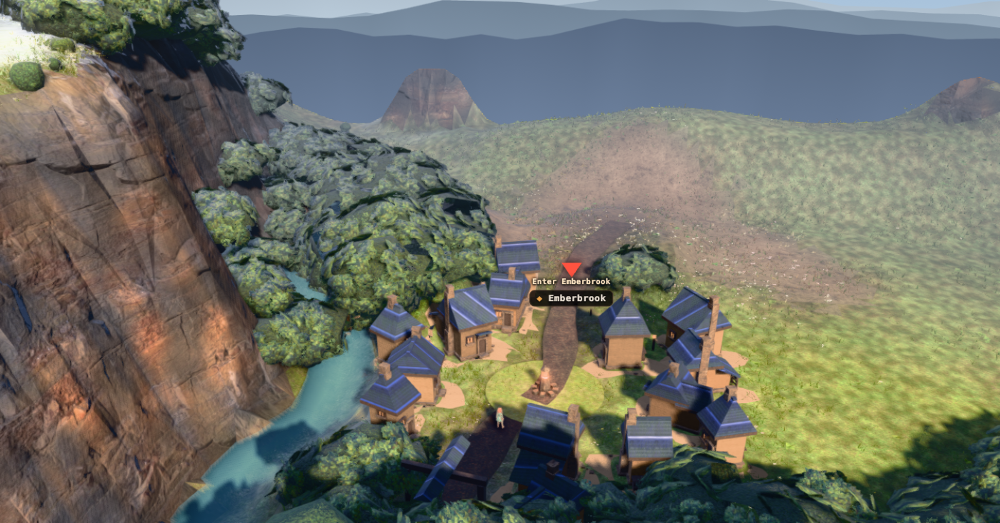
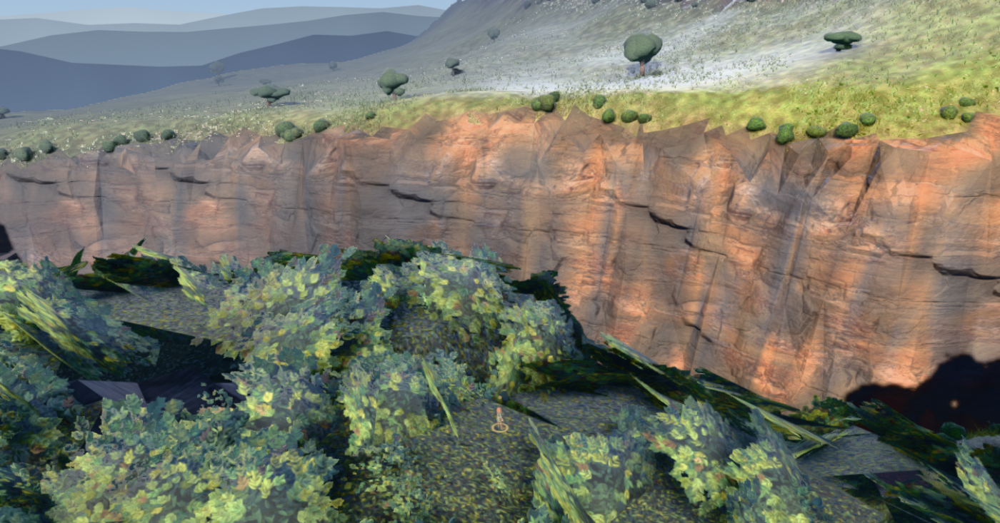
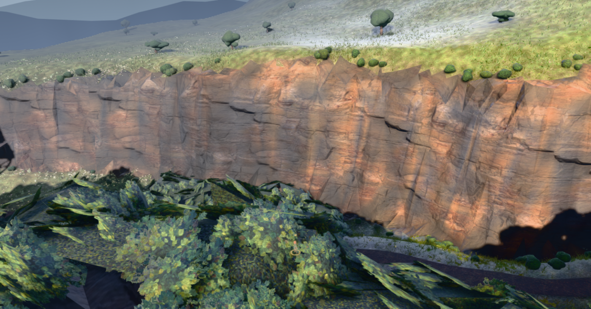
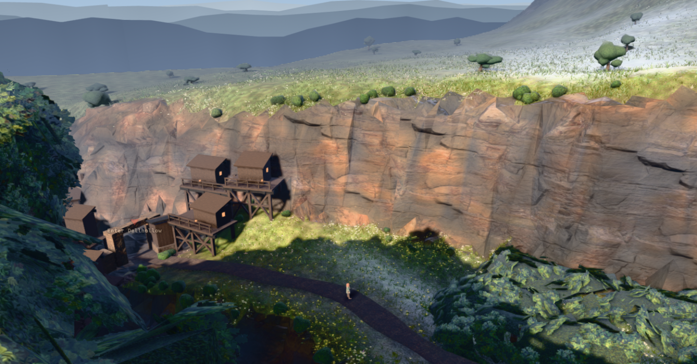
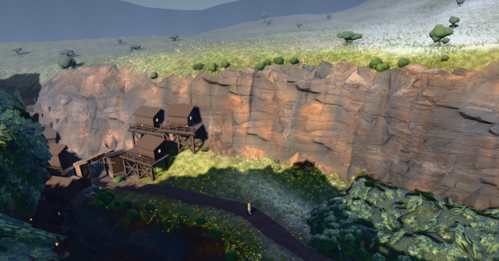
public/play3d.html is coordinator-owned@@ public/play3d.html:90-93 -// SHIPPED: pitch 0.61 UNCHANGED (see the sweep — every reduction of it drove the boom -// into terrain, because this rig has no camera collision), tilt 0.22. +// SHIPPED (r27, 2026-08-05): pitch 0.66, tilt 0.22. Pitch DOWN is still refused and is +// now refused with a number — at 0.37 the boom is 0.5 m UNDER the ground and the visible +// ground area halves. Pitch UP is the move nobody had swept: +0.05 rad lifts the boom +// 0.9 m, takes the worst station's leaf fill from 65% to 49% and the frame's ground from +// 45.9% to 54.6%, and costs 2.7 points of the distance band. TILT IS UNTOUCHED ON +// PURPOSE: tilt ALONE sets where the body sits in the frame (playerFrameY is the same +// four numbers at pitch 0.61 and 0.37), and a blind critic refused 0.66/0.25 — better on +// every metric — because the body dropped 0.818 -> 0.858 and the world-anchored labels +// collided. docs/qa/ow-camera/index.html. // ?owtilt=0 is the exact frame we shipped before this change. -let OWPITCH=0.61, OWTILT=0.22; +let OWPITCH=0.66, OWTILT=0.22;
?owpitch=0.61 reproduces the previous frame exactly; the whole sweep is replayable with
node tools/ow_probe/cam_sweep.mjs --port 3000 --out <dir>.
Both blind critics, independently, put the same item first: the character is too small and too low, and the distance band is dead weight. The rig that answers them fully is 0.70 / 0.16 — body up from 0.818 to 0.734 (the references sit at 0.615–0.63), ground 59.7%, visible ground 1337 m² (+4% on shipped), leaf 27.7% — bought by spending the horizon band down to 5.4%. That runs against the user's own words ("whether we should include more of the horizon line in the shot… very open"), so it is surfaced, not shipped.
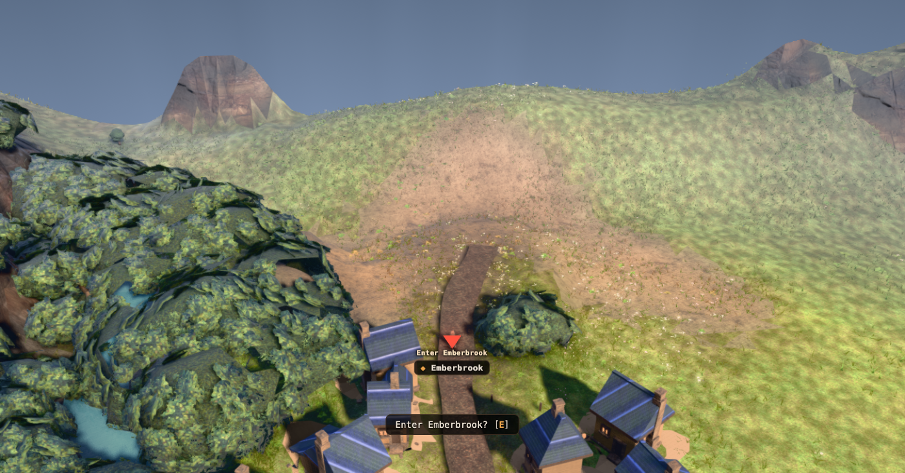
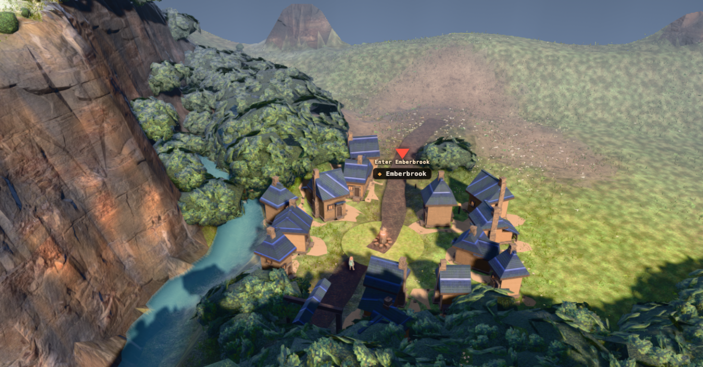
Measured on the reference frames themselves (1920×1080, ruler overlay):
| ours (r27) | ref 1 (Dali coast) | ref 3 (windmill) | |
|---|---|---|---|
| character's feet, frame Y | 0.817 | 0.63 | 0.615 |
| character height, % of frame | 3.9% | 5.5% | 11.0% |
| distance band, top of frame | ~27% | ~42% | ~42% |
Their character is 1.4× to 2.8× larger on screen and sits a fifth of a frame higher with real foreground under it. Both follow from one thing: their camera is roughly 25 m out and ours is 40. Boom 40 is a standing user ruling and this lane did not touch it — but the measurement belongs on the record, because "match the references' composition" and "keep the boom at 40" are not both satisfiable, and every future camera round will rediscover that if it is not written down. The one lever that closes it without moving the boom is the field of view (42° → ~62° reaches the reference's body position and air band simultaneously) and it costs 1.6× of the character's on-screen size, which is the wrong trade. Second critic, unprompted: "Get the camera in by half and the problem mostly dissolves."
findability_test 69 / 0 (10 warnings, all pre-existing) ·
playthrough_test --port=3000 as recorded in the commit · no plate bake ran, so
cine_test and slice_test are untouched by this lane. The ow follow camera is
read by nothing else: ORBIT.pitch and ORBIT.tilt appear in
play3d.html only where they are set and where the boom is placed, and nothing in
collide, walkRef or the story runtime reads either — which is why a pitch
change cannot move a findability result the way a BAKED town camera would.